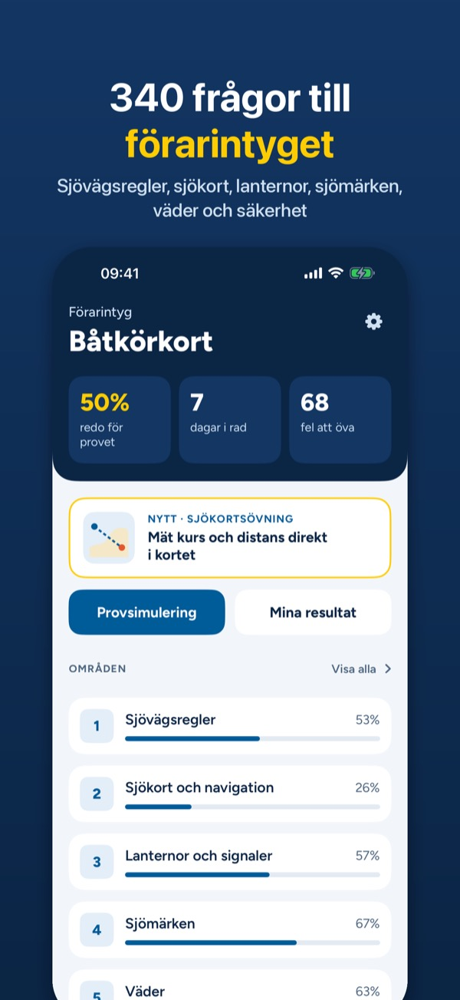
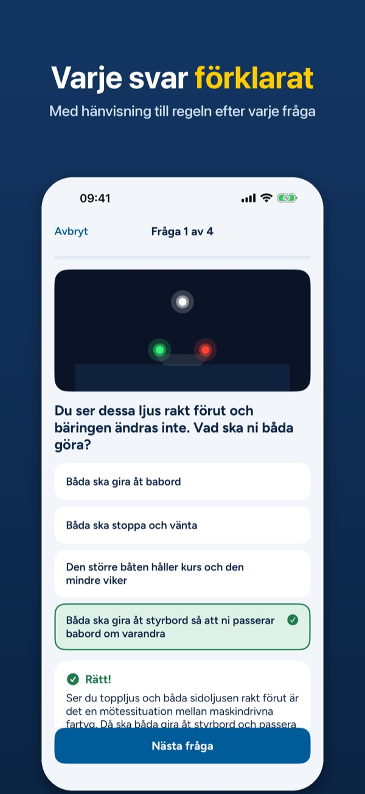
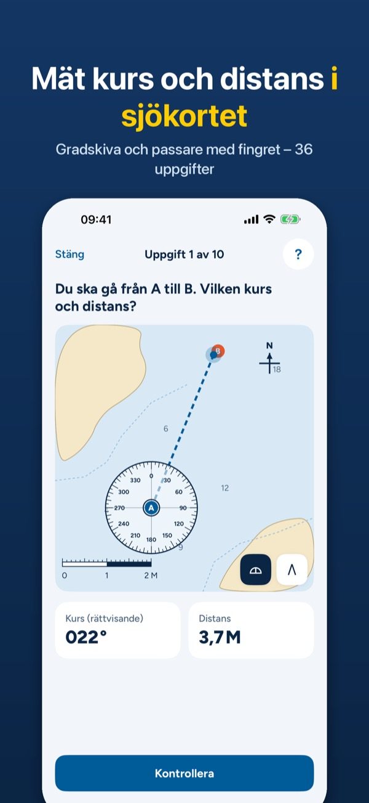
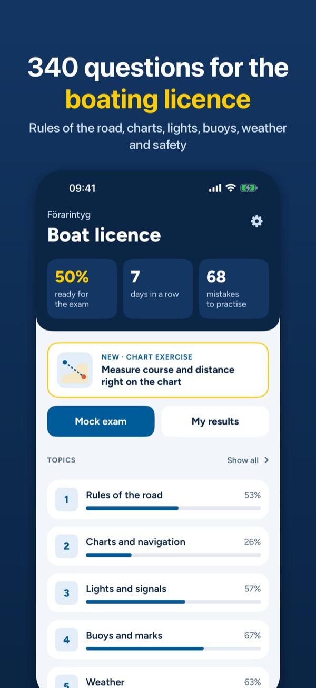
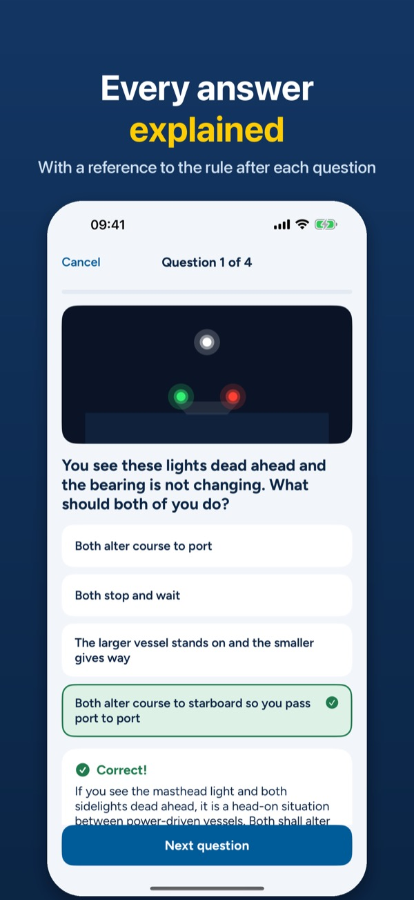
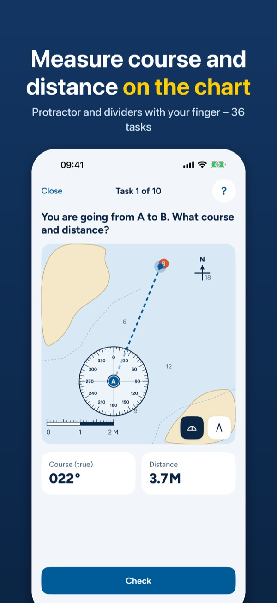

Båtkörkort – Förarintyg 2026
Teori, sjökort & provfrågor
Hämta i App Store



Plugga till förarintyget för fritidsbåt (båtkörkortet) med 340 egna övningsfrågor, interaktiva sjökortsuppgifter och provsimulering på tid. Varje svar förklaras med en hänvisning till regeln. Engångsköp, ingen prenumeration.
DET HÄR FINNS I APPEN
- 340 frågor i 6 områden: sjövägsregler, sjökort och navigation, lanternor och signaler, sjömärken, väder och säkerhet
- Förklaring och regelhänvisning efter varje svar (Sjövägsreglerna, IALA, Sjölagen m.fl.)
- 36 sjökortsuppgifter: rita kursen från A till B, mät med gradskiva och passare och skriv in kurs och distans. Facit visar din linje mot rätt linje – även uppgifter med missvisning och magnetisk kurs
- Sjömärken enligt IALA A: babord, styrbord, kardinalmärken, enstaka fara, mittled, specialmärken
- Kort för lanternor, dagersignaler och ljudsignaler, ritade så att du ser vad du ser på sjön
- Provsimulering på 90 minuter, uppbyggd som exempelprovet: tre delar med egen gräns för godkänt
- Mina fel: frågor du svarat fel på kommer tillbaka tills du kan dem två gånger i rad, med trend för veckan
- Studieplan efter ditt provdatum: så många frågor om dagen behöver du
- Mörkt läge och stor text
- Allt innehåll på svenska och engelska
PROVA FÖRST
Utan köp kan du öva 20 frågor om sjövägsregler, 2 sjökortsuppgifter och de första korten. Ett köp låser upp allt, för alltid. Inget konto, ingen reklam. Övningarna fungerar utan internet.
Appen är fristående och har ingen koppling till Nämnden för båtlivsutbildning, Transportstyrelsen eller Sjöfartsverket. Frågorna är skrivna av oss och är inte officiella provfrågor. Övningskorten är påhittade och inte avsedda för navigation. Appen skickar anonym användningsstatistik som du kan stänga av i Inställningar.
Integritetspolicy: https://baytechbv.github.io/privacy/forarintyg-se/
Användarvillkor (EULA): https://www.apple.com/legal/internet-services/itunes/dev/stdeula/
Båtkörkort – Boat Licence SE
Swedish boating theory & test
Download on the App Store



Study for the Swedish boating licence (Förarintyg för fritidsbåt, "båtkörkort") with 340 practice questions of our own, interactive chart tasks and a timed mock exam. Every answer is explained with a reference to the rule. One-time purchase, no subscription.
WHAT'S INSIDE
- 340 questions in 6 topics: rules of the road, charts and navigation, lights and signals, buoys and marks, weather and safety
- An explanation and a rule reference after every answer (COLREG, IALA, Swedish Maritime Code and more)
- 36 chart tasks: draw the course from A to B, measure with protractor and dividers, enter course and distance. The answer shows your line against the correct one – including tasks with variation and magnetic course
- IALA A buoyage: port, starboard, cardinal marks, isolated danger, safe water, special marks
- Cards for navigation lights, day signals and sound signals, drawn the way you see them on the water
- 90-minute mock exam built like the sample exam: three parts, each with its own pass mark
- My mistakes: missed questions come back until you get them right twice in a row, with a weekly trend
- Study plan for your exam date: how many questions a day you need
- Dark mode and large text
- All content in Swedish and English
TRY FIRST
Without a purchase you can practise 20 rules-of-the-road questions, 2 chart tasks and the first cards. One purchase unlocks everything, for good. No account, no ads. Practice works offline.
The app is independent and not affiliated with Nämnden för båtlivsutbildning, Transportstyrelsen or Sjöfartsverket. The questions are written by us and are not official exam questions. The practice charts are made up and not for navigation. The app sends anonymous usage statistics, which you can turn off in Settings.
Privacy policy: https://baytechbv.github.io/privacy/forarintyg-se/
Terms of Use (EULA): https://www.apple.com/legal/internet-services/itunes/dev/stdeula/